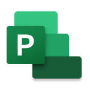
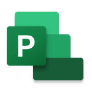

Virtual Assistant Tools
As an Executive Assistant working remotely, I learned to use various virtual assistant tools that made my work more efficient. I managed our CRM processes with Bitrix24 and used Smartsheet to keep track of projects and organize data. Microsoft 365 and Google Workspace were essential for creating documents, managing emails with Outlook, and collaborating through Teams and SharePoint Online. I used Zoom for virtual meetings, Canva for creating presentations and marketing materials, and Microsoft Project for planning projects. I also used Bambee for HR tasks, Homebase for team scheduling and time tracking, and Outlook for managing emails and appointments. These tools helped me support the CEO and the team effectively, ensuring everything ran smoothly in a remote work setting.

 
